Monday
After another day of shoveling the requests through the models and juicing that sweet sweet throughput I took some time and unpacked my new Roomba. Ok technically its the chinese version of the Roomba called a Roborock but I’m not one for details here. Thanks to “The Awepartment” for recommending me this version. According to him the Chinese version is both cheaper and better quality. And it comes with a mop as well.
If there is one thing I’ve learned in my hour of setting up a Roomba it’s that the hardest part is unpacking the thing and flattening the big boxes it comes in. There are many layers of boxes all of which have to be flattened so they can be taken down to my apartment’s recycling bin. It was a test of character the likes of which was solidly mildly annoying. Did it kill me? No. Did I feel a slow but steady drain for 40 minutes as I cut, stomped, and folded and finagled the Roomba to be setup. Yep. But set it up I did and here you can see the Roomba in all it’s glory.
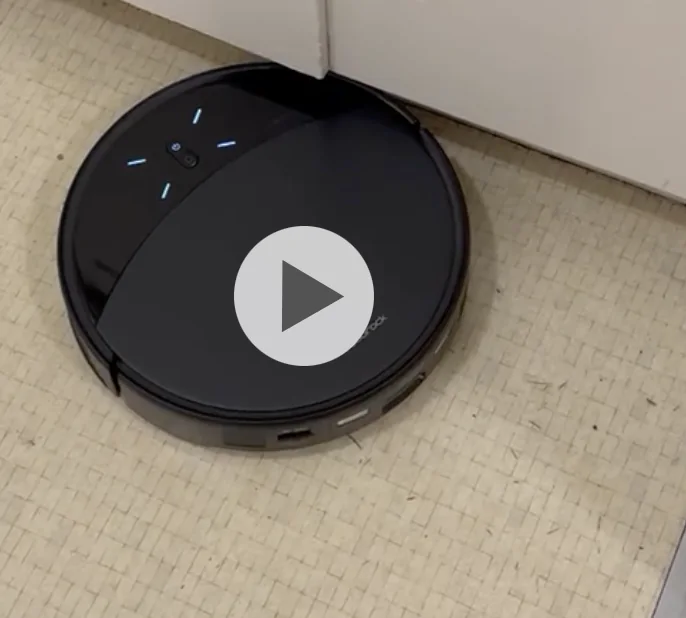
I feel like given the trend of naming my air purifier and the inflatable penguin I should come up with a name for the Roomba. However as a form of audience engagement I will give the honor of what to name the Roomba to you all. Specifically I am asking you all for suggestions and my personal favorite wins. Maybe if I’m feeling it I’ll collect suggestions this week and make a poll for people to vote next week or if I really like a suggestion I will pick that but either way. Send me suggestions and the winning suggestion will be highlighted whenever I decide to do that.
Tuesday
Once I finished having my agents code for me I went to my final standup class of the series. By this point I think I really started to shake off my rust and feel more comfortable on stage. I’m gonna be signing up to do a show soon so look out for that if you’re interested. I have a set I’ve been working on and I’m excited to show y’all.
Wednesday
After doing my part to propagate the slopocalpyse I went to Midnight Runners with “Sergeant Sassy” and “The Trivial Pursuit”. It was my first time running in a couple weeks and unfortunately it did show in the first mile or so. Going at an 8:30 pace for that first mile normally shouldn’t have my feeling out of breath and a little tired but there we were. Granted it could have been me warming up as well but still :(. On the plus side “The Trivial Pursuit” dropped this great line that I will now immortalize here “Two elves gave my hickies. Lickies.” I also got a suggestion to use cook unity as a meal service to help maximize protein which was interesting. I tried using a different meal service but found the meals to frankly not be good.
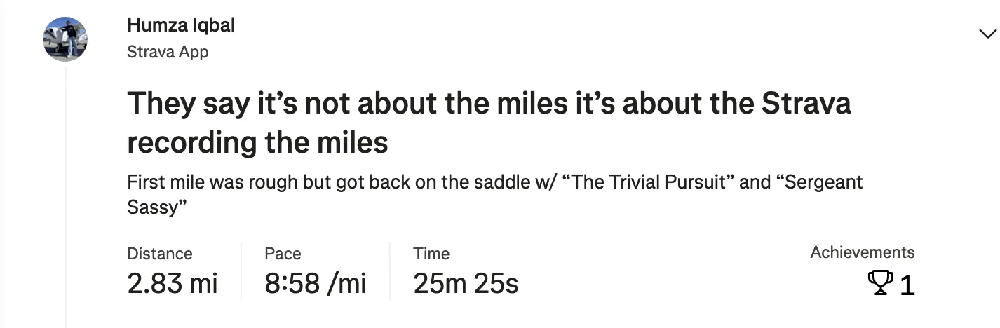
Thursday
Once I tokened to the left and I tokened to the right and shaked it all about I went to bar night with “The Philosopher,” “The Juggler,” “The Awepartment,” “The Bar Tender,” and “The Twitch Streamer.” “The Twitch Streamer” did a cool trick of pouring in the water (“Humza special” as we call it at the local bar which was fun to watch. He poured it without spilling a drop
In the background we watched the U.S and Turkey play in the world cup. Much to my surprise Turkey won with a last minute goal even though the U.S secured it’s spot in the next round and Turkey was out.
I asked “The Juggler” what the best part about being Canadian is and he said it’s getting to go to crazy places like the Yukon. I kinda want to go there now just to assert that I can as a domineering American. America! Fuck yea!
Friday
After hopping up on Ito Ens I went to KBBQ with “The Quant”. We changed it up and went to Ohgane in Oakland which was quite solid! I think I like the meat at Kogi Gogi slightly more but it was still great and it was fun to try a new place. Remember my personal trainer said I need more protein so I have to eat here to follow the professionals orders.
Saturday
Today I went to Marina Run club with one of my friends who isn’t on the newsletter. He’s a trash pickup friend who I have been meaning to go on a run with sometime so it was great I got to bring him to the club. The run was pretty good, nothing out of the ordinary. We originally agreed to keep it 9 min/mile maximum and we were reasonably on target for that. We did
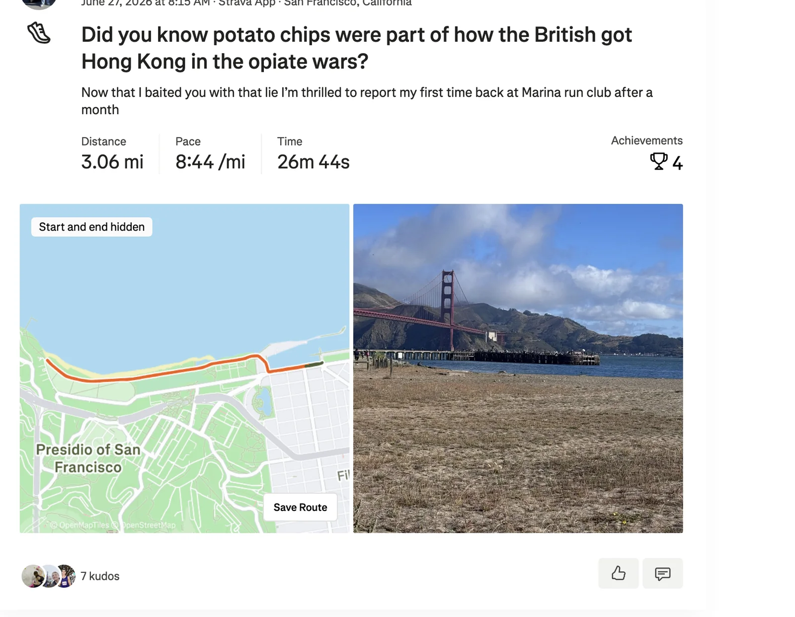
After the run I went to trash pickup with “The Ravenkeeper” and a bunch of others. “The Notetaker” is on hiatus due to recovering from the liver donation so it’s up to me and some others to help lead the trash pickup by which I really mean it’s up to others since I don’t take an active role in leading pickup anymore unless I’m absolutely needed. I think I’m more of a leader emeritus now.
Once pickup was done I wandered around for a while and finally read the first Hunter x Hunter chapter after a 2 year hiatus. For those who don’t know Hunter x Hunter is my favorite anime / manga of all time and due to the author’s poor health we get batches of 10 chapters every 2 years now so when a drop hits its a big event. I won’t be broadcasting high level takes on every chapter but I quite liked the first chapter of the new batch. It gave us some new information about [that contest] and I’m really excited to see why [that person] isn’t a part of [that contest].
After freshening up some and getting some supplies I went to “The Fisherwoman’s” house to help her set up for a party she is having. For anyone who doesn’t know she has been getting very into homemade salsa lately and wanted to have a potlucky luck. She also caught some stingrays that we made into stingray nuggets.
Since I arrived early I was on the prep crew to help get stuff ready. I chopped a cabbage for the very first time and learned that you want long vertical strands of the stuff for a coleslaw. I think the time I chopped onions for the Plov I made last week helped with this somewhat but I think I need something like the knife skills class I’ll be taking with “Top of the Rope” to really level up here.
I also made batter and deep fried things for the first time. Turns out the trick to batter is to get some flour, some old bae, some onion and garlic powder, and mix it together with something carbonated. We used San Pellegrino for this because there were some folks that wouldn’t be able to eat it if it was beer battered as is more common. The deep frying was pretty fun and the stingray nuggets actually tasted quite good.
At this party I had a bit of a mini boss to tackle, specifically my lack of tolerance for spicy foods. I don’t have a high spice tolerance but “The Fisherwoman” really wanted me to have some of the salsa. There were 3 different salsas, some of which I was told I would feel right away and some I would feel later. I grabbed a random one and had a salsa taco. It was … less than pleasant.
She said a few moments later that she wished she had recorded my reaction but doubted she could get me to do it again. I thought to myself I may as well go big or go home so I got another salsa taco but with all 3 of the salsas so I can feel it now and later and ate the taco. It was certainly not pleasant but not the worst either. I actually managed to get through it without doing what “The Philosopher” would call “The Humza emote” where I dance around wildly as a coping mechanism for the spice. Multiple people asked if I wanted milk or cheese to help with the spice but I am dairy intolerant (and no lactase doesn’t work on me) which was very thoughtful but admittedly tiring to explain why I must sadly decline multiple times in a row.
Then the party got in full swing and a number of people showed up including “The Awepartment,” “The Quant,” “The Trash Queen,” “Mr. Greenflag,” “The Rugby Player,” “Sustainably Fashionable” and many more. When “The Awepartment” got there I was initially dreading the chili he said he would be bringing because he said he would be making it extra spicy. However fate favored me today because it seems they didn’t have the spicy chilis at the farmer’s market. He did say he wanted to see me eat spicy food so I once again had the 3 salsa taco and it was actually not as bad the second time around. I wonder if I might slowly be developing more of a spice tolerance.
Afterwards some people were egging me on to go up the stairs and tell a joke in front of the whole party which I did. I mentioned that at trash pickup today someone was talking about when they were swiping on Hinge and saw a girl who works at Lockheed Martin and one of the pics was her behind a missile she was working on. Some people around me were put off by this and said she should read the room but I said the girl should get some credit for shooting her shot :D. I quite liked the joke but I think the reception was mixed. One thing I’ve been told is that I deliver my jokes with too much of a straight face sometimes so it can be hard to know if I’m joking. Perhaps I squandered my one minute of fame and should have told my Austrian joke instead. For those unaware Austrians don’t talk enough about the things they invented whether it’s croissants or Hitler.
I also started a trend of people sitting on the floor when standing on the hardwood floor for many hours proved to be taxing on the feet. I was the first to do it and then the people I was talking with did it as well and shortly thereafter multiple other people in the room did it as well. I was floored by the whole thing :D.
As the night went on we left “The Fisherwoman’s” place and went to a bar. While on the way there I got some interesting feedback from someone who said that my voice sounds strained and passionate like a 1950’s sports caster. The way this came up was because he said I seemed anxious and I asked how he knew and he said it came down to my voice and how I say certain things and put emphasis on certain words. He said not to think too deeply about it but it’s hard not to when someone says something like that. I didn’t feel sad about this to be clear but it definitely surprised me.
I really wish I could have stayed at the bar crawl longer, especially since it ended with karaoke but I was an eepy sleepy. Some people were saying karaoke is best to end the night with because it will be more fun after drinks but I disagree. I think karaoke is great while sober! 10/10 recommend.
Sunday
The day begins with trash pickup with people who I should give nicknames to but don’t have the time right now to think of them. I asked one of them which of life’s hidden truths they uncovered yesterday and one guy said “trying to live in the moment results in you not living in the moment you just have to go with the flow which he uncovered while dancing.
After pickup I went to a shawarma party hosted by “The Orchestra” along with some of his old roomates. Also there was “The Philosopher,” “That’s Nuts,” “The Mosher” and a bunch of other folks. While there someone asked me what I did for work and I said I worked at an AI inference company. He asked what I’m trying to guess and I said lottery numbers. I made up a bit that I work at a company specifically working to guess winning lottery numbers. For fun I said I worked on the diversification team that specialized in having different people claim the winning number and splitting the winnings to make it less suspicious.
From there I went to play board games with “The Quant” and “The Pickleballer”. We played some coup and I got to have some of “The Pickleballer’s” shrimp which was quite good. We had a great time making fun of cringe linkedin posts from “The Pickleballer’s” sister and “The Quant’s” boss.
Personal training progress for the week
Charts below show the logged progress over time for each exercise from the 6/23/2026 and 6/25/2026 workouts. For weighted exercises, the metric is total volume; for bodyweight, time, or weight-only entries, it uses the clearest logged quantity available.
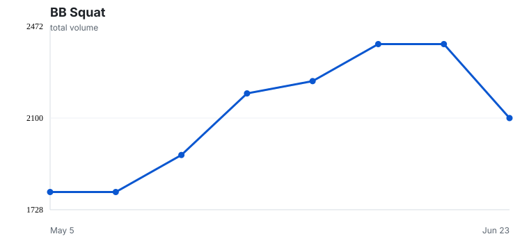
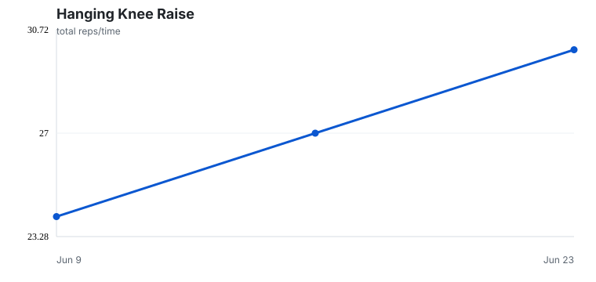
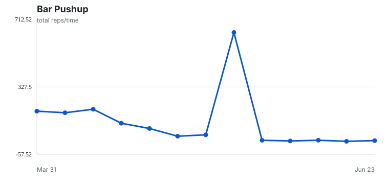
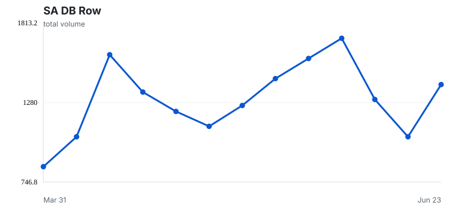
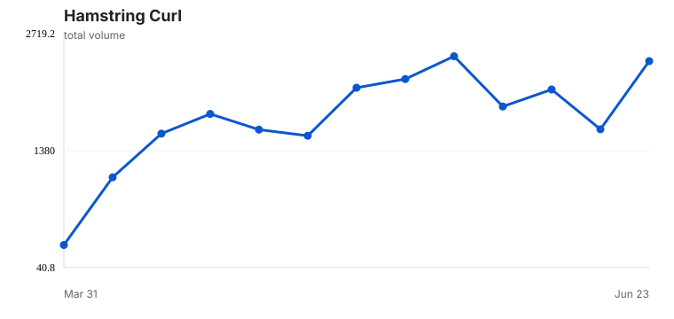
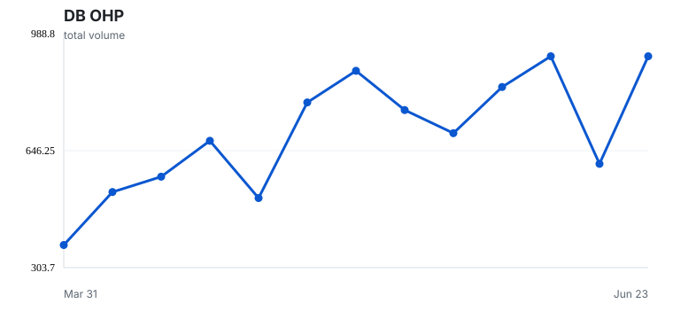
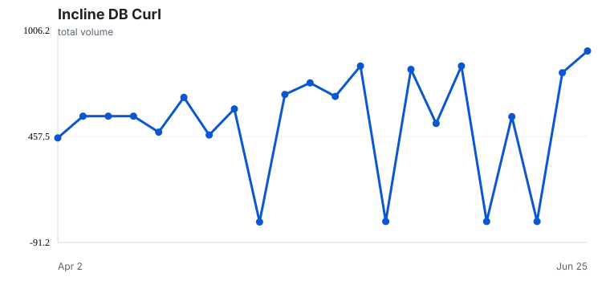
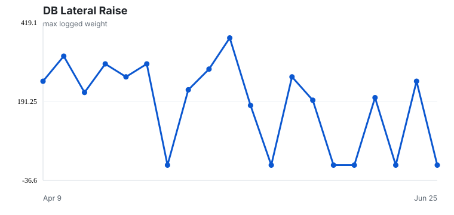
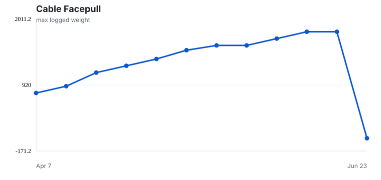
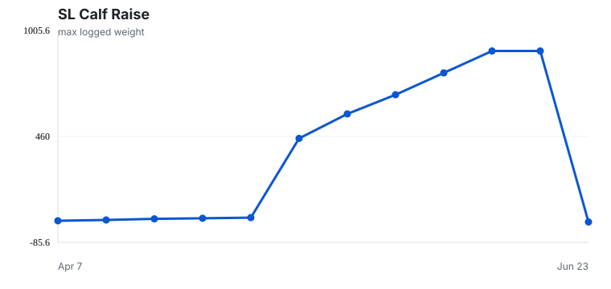
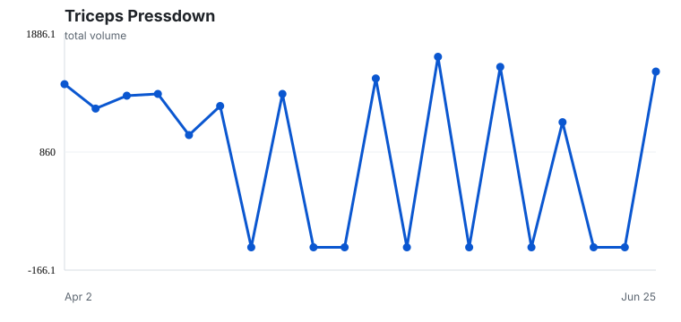
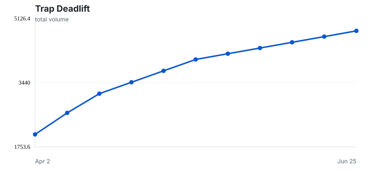
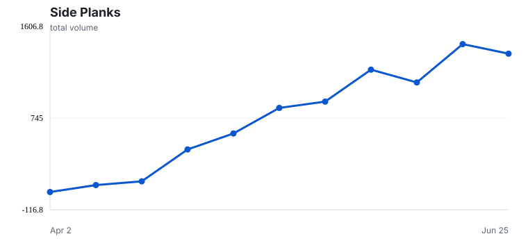
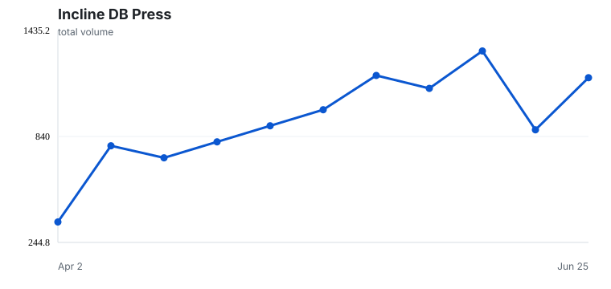
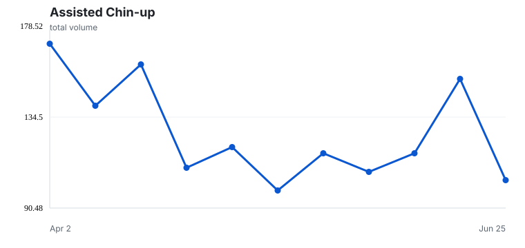
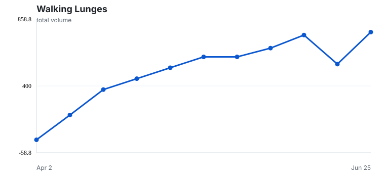